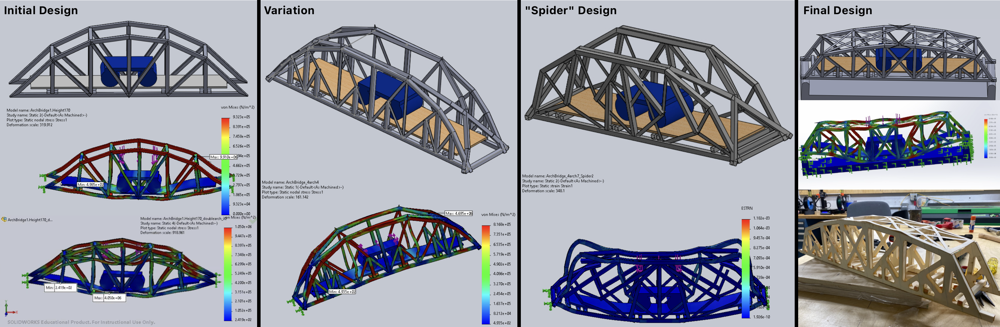
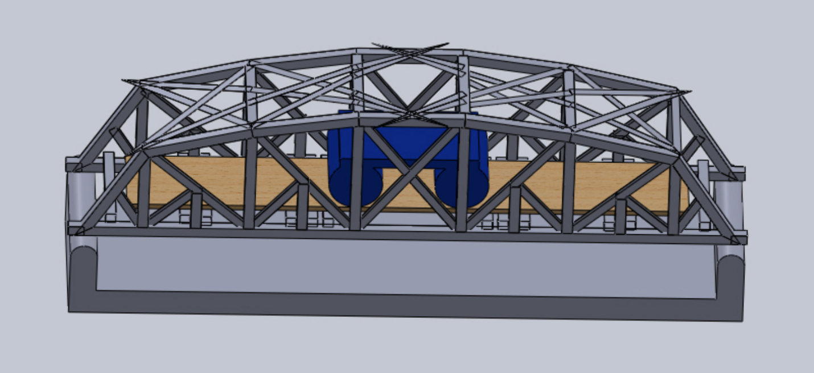
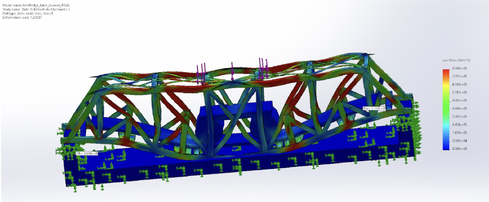
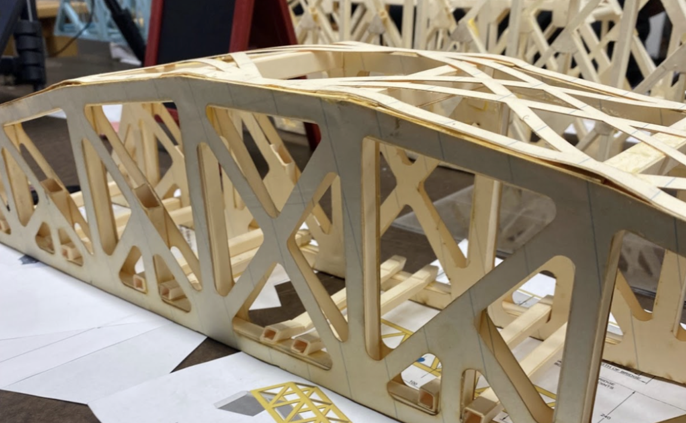

Truss Bridge
My team of three created a scaled-down model of a pedestrian truss bridge using manila folder material as part of the course ENGS 33: Solid Mechanics. My responsibilities in the project included mechanical design, piece and assembly modeling in SOLIDWORKS, FEA for deformation, and assembling the physical bridge.
The goals of the project were to create the most economic bridge that can withstand 1kN of applied force and to accurately predict deformation and maximum load through finite element analysis (FEA) and hand-calculations, respectively.
Our bridge had the highest load-bearing-to-weight ratio of all eight groups in our class.
Design Process
We iterated through multiple bridge designs, shown below. We modeled each in SolidWorks, hand-calculated the compression and tension forces of the side truss structure, performed FEA simulations, and adjuted our design based on the learnings.

Final Design
Our final, built design is shown below.

SolidWorks Model
The final design for our bridge, as modeled in SolidWorks
Our final model included a lattice inspired tension design at the top. We noticed from past simulations that the top compressive members at the arch were getting pushed down as we increased the load applied, requiring a tension force at the top to alleviate the stress on the compressive members.
We created a custom material in SolidWorks to more accurately model the properties of the manila paper we were using as our material. To determine the Young’s Modulus for manilla paper (which is 1.05E-10), we conducted tensile tests and compression tests on the Instron.

FEA Analysis
CAD simulation for finding the maximum amount of stress the bridge can hold:
We used SolidWorks FEA analysis to perform deflection and stress tests, ensuring our bridge met the project's minimum weight loading requirements. This approach enabled us to virtually iterate on our design, resulting in the highest load-bearing-to-weight ratio of all eight groups in our class.

Built Design
Point of failure during testing
During testing, the bridge broke at the 8mm x 8mm crossmembers of the deck. The shear force was evenly split between the two central crossmembers, this is evidenced above by the resulting step offs at the edge of the side member. The members buckled after the application of the load changed once the provided deck cracked.
